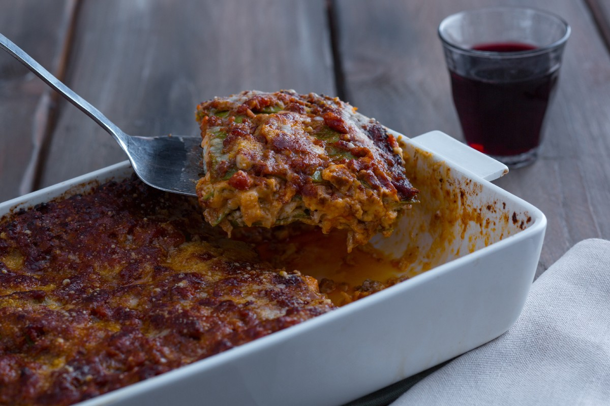

Lasagne della nonna (a mystery as to whose nonna this might be)"

Description:
A standard recipe of every nonna out there, reused and repurposed mille times over.
Ingredients:
- Lasagne plates, ideally barilla 500gr
- 1L full fat milk
- 30 gr flour
- A smidge of nutmeg
- 1 kg of mixed mince
- Celery, tomato, Onion for the 'aromi', as much as you would like.
- Tomato sauce, 2 boxes, tomato paste, roughly 15gr
- Butter, 100gr
- As much parmesan as your taste buds can handle
Steps:
- Mince the aromi and fry until aromatic in a spoonful or two of olive oil
- Remove the aromi and add the meat until browned
- Deglaze the pan and add the aromi, salt, pepper, tomato sauce and paste
- Allow to simmer for at least two hours while you make the bechamel; Melt the butter in a deep saucepan
- Add the flour and stir until a roux forms; Add the milk and stir until thickened
- Layer the pasta, bechamel, plate, meat and repeat. Cook at 180 for 45mins.